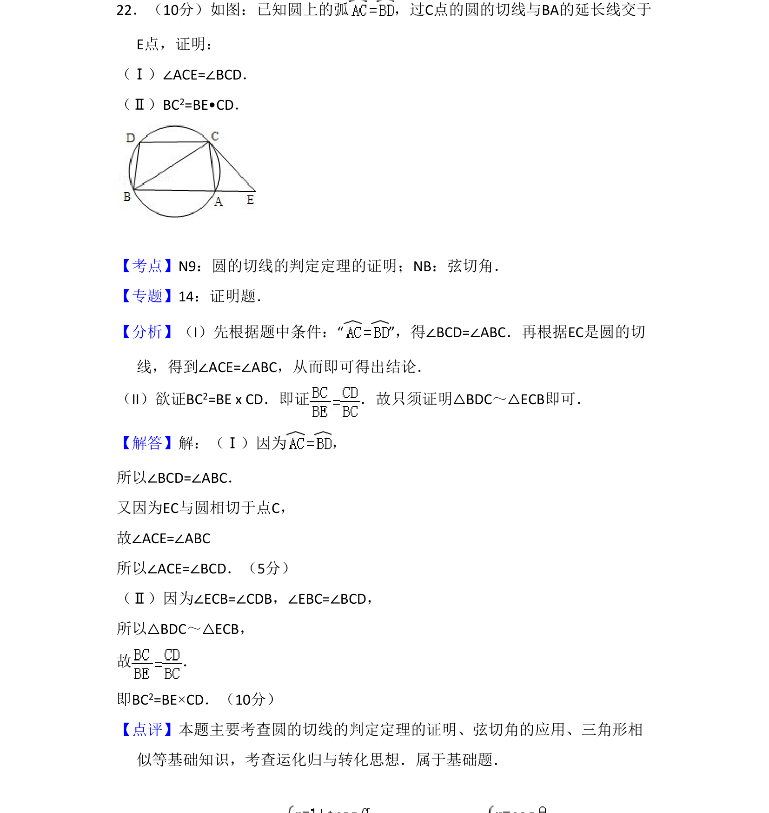
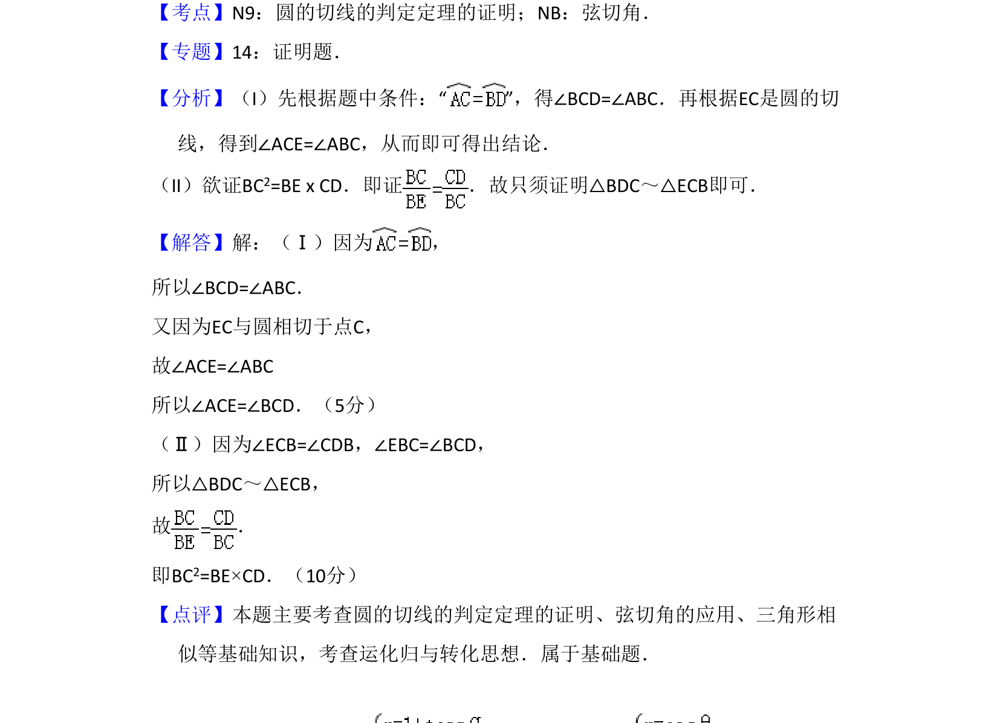

考点：弦切角 圆周角定理 相似三角形

本题利用圆的切线性质与弦切角定理证明角相等及线段比例关系，结合三角形相似进行推导。

📄 原 PDF 第 17 页：
素材/真题/吉林/2008-2024·（吉林）数学高考真题/2010年高考数学试卷（文）（新课标）（解析卷）.pdf
22．（10分）如图：已知圆上的弧 ，过C点的圆的切线与BA的延长线交于 E点，证明： （Ⅰ）∠ACE=∠BCD． （Ⅱ）BC2=BE•CD．
【考点】N9：圆的切线的判定定理的证明；NB：弦切角．菁优网版权所有 【专题】14：证明题． 【分析】（I）先根据题中条件：“ ”，得∠BCD=∠ABC．再根据EC是圆的切 线，得到∠ACE=∠ABC，从而即可得出结论． （II）欲证BC2=BE x CD．即证 ．故只须证明△BDC～△ECB即可． 【解答】解：（Ⅰ）因为 ， 所以∠BCD=∠ABC． 又因为EC与圆相切于点C， 故∠ACE=∠ABC 所以∠ACE=∠BCD．（5分） （Ⅱ）因为∠ECB=∠CDB，∠EBC=∠BCD， 所以△BDC～△ECB， 故 ． 即BC2=BE×CD．（10分） 【点评】本题主要考查圆的切线的判定定理的证明、弦切角的应用、三角形相 似等基础知识，考查运化归与转化思想．属于基础题．